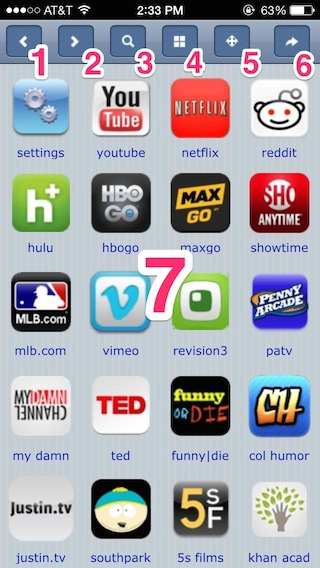
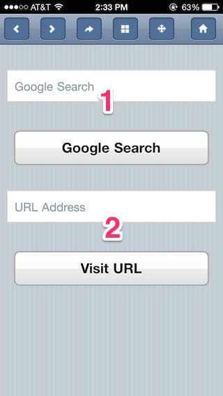
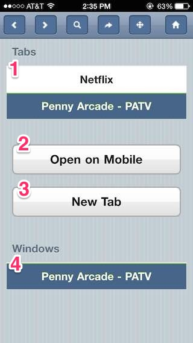
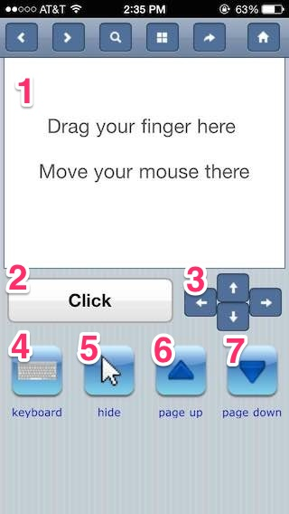

Firefox Remote Control
Controlling your TV with your iPhone via OSX, Firefox, and an HDMI cable
Introduction
I bought a big new flatscreen television around 2009 and wanted to watch streaming Internet video on it. These videos went beyond Netflix and Hulu, which produced custom integrations for game consoles and dongles. I wanted access to all Internet video, and Adobe Flash was still king, making the web browser an important part of my goal.
The Problem
Using an adapter and HDMI cable, I connected an old Mac Mini to my television, but web browsers and Flash video players were aimed at the mouse and keyboard, which aren't practical for 10-foot interfaces (someone should have told that to Google TV). On the other hand, I could easily spend a couple hours on my couch browsing the web on my iPhone, but I just didn't like watching videos on it. How could I display Flash video on my big TV but interact with it like my iPhone?
The Solution
I would make an interface for controlling my computer's web browser with my iPhone. As you can imagine, easier said than done.
Embedded Web Server
The first step was establishing how my iPhone would communicate with my web browser. Being a web developer, HTTP seemed like the obvious answer, and I found POW (Plain Old Webserver) which embedded a javascript-based HTTP server inside a Firefox plugin, so it was possible!
I pulled what I needed out of POW and wrote a simpler version in Coffee-script that responded to HTML requests and served static images, scripts, and stylesheets. Apple's Bonjour made it possible to avoid exposing IP addresses: my web browser would now respond to samuel.local:4000
Dashboard

- Back one page
- Forward one page
- Open "Searching and Navigating"
- Open "Tabs and Windows"
- Open "Mouse and Keyboard Controls"
- Open "Dashboard"
- Navigate to a common streaming video website
Searching and Navigating

- Search Google
- Go to an explicit web address
Tabs and Windows

- Switch to a different tab. Swipe to close.
- Open the browser's current webpage on your iPhone.
- Open a new tab.
- Switch to a different window. Swipe to close.
Mouse and Keyboard Controls

- Move the mouse around your television.
- Left click the mouse.
- Move the mouse a little bit up, down, left, or right.
- Open the Keyboard interface that lets you hit return, escape, and input text.
- Scroll the current page up a large amount.
- Scroll the current page down a large amount.
Bookmarklets
The above functionality manages the web browser, but it's still basically a 10-foot interface. By creating a bookmarklet, you can push the webpage on your iPhone to your computer's browser and full-screen the video with the mouse controls. You browse 100% on your phone and watch 100% on your TV.
Wrap-Up
I spent some time polishing up the Firefox plugin and named it remifi (REMote-control over wIFI), but overall lacked the drive to market or expand. Since then the streaming video options have grown: Apple TV3, Airplay, Google TV, Roku, Chromecast, and Fire TV, but remifi still sits as my way of watching Internet video and reigns as my most-used, longest-lasting personal creation:
- Many sites still require Adobe Flash
- Airplay is blocked by several apps
- Airplay drains your battery and has occasional issues multitasking
- Apple TV content costs ~$1 more than most
- 10-foot interfaces still smell
You can review the source code on github and watch the demostrations at remifi.com.